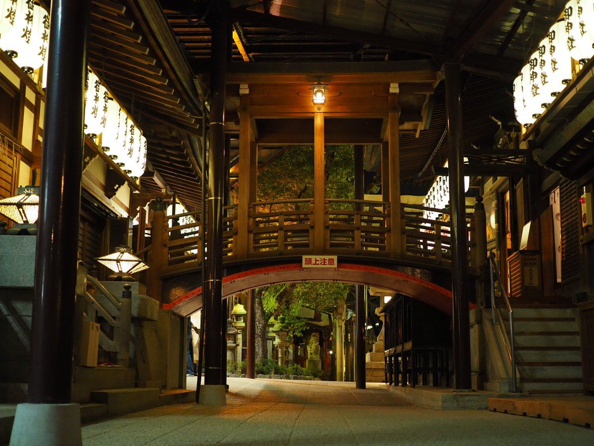

石切劔箭神社 · "Ishikiri-san" · Tour finale
By day this is a busy neighborhood shrine. After dark, something shifts. The crowds thin out, the lanterns take over from the sun, and the stone lions at the gate seem to watch a little more closely. Step through, and you're stepping into a story that's said to reach back some 2,600 years — to the reign of Emperor Jinmu, the legendary first emperor of Japan, in whose era this shrine's origins are traced.
Locals call it Denbo no Kamisama — a name tied to healing, and above all to gan-fuji, warding off cancer. This is centuries-old belief, not medical claim, and it's worth saying plainly: nothing here treats illness. But belief has its own weight. People still travel here quietly, at all hours, to pray for themselves or someone they love facing a serious diagnosis — and that unspoken urgency lingers in the air in a way no ordinary sightseeing stop ever does.
Watch the approach to the main hall and you may see it: figures walking the same short stretch of ground again and again, a hundred times over. That's ohyakudo mairi, "the hundred-times pilgrimage" — one prayer repeated until it becomes a kind of vigil. At night, with almost no one else around, it can feel less like a tourist sight and more like something you weren't quite meant to witness.

Open Ishikiri Tsurugiya Shrine in Google Maps